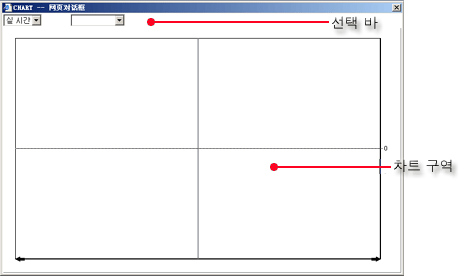
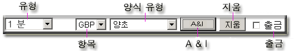

차트
차트 대화창은 주 스크린의 메뉴 상에 차트 버튼을 마우스로 클릭함으로써
활성화된다. 대화창은 주로 다음처럼 이루어져 있다:
선택 바
차트 구역

차트
대화창
선택
바
차트창 윗부분에, 사용자가 다양한 차트 성질과
기능을 마련하게끔 버튼들 바가 제공되어 있다.
버튼들 바:

-
유형
-
다음 차트 유형들이 사용자 선택을 위해 유용하다:
-
실시간
-
1
분
-
5 분
-
매일
-
주간
-
월간
-
항목
- 아래로 내림 상자가 사용자로 하여금 차트 계기를 선택하게끔 해 준다.
-
양식 유형
-
다음이 사용자 선택을 위해 유용하다:
-
양초모양(Candle)
-
High HiLo
-
Close HiLo
-
Open CloseHiLo
-
A
& I
- 분석 및 표시기 선택을 위해
-
지움
-
사용자가 그은 모든 줄들을 지우기 위해
-
출금 - 사용자가 그래프 상에 줄들을 긋게끔 하기 위해